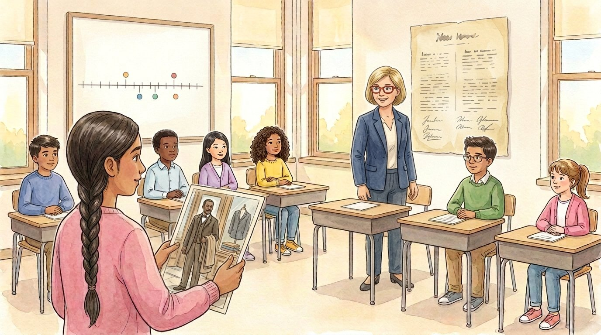

Grade 8 · Social studies · SS.6-8.CV.3.LC
The state that voted first
A story about a telegram from Washington, an afternoon vote in Springfield, and a Chicago tailor who spent years fighting an unjust state law.
El estado que votó primero. Un cuento sobre un telegrama desde Washington, una votación una tarde en Springfield y un sastre de Chicago que pasó años luchando contra una ley injusta del estado.
Social studies words you will learn
Tap a green word to see what it means.
Toca una palabra verde para ver qué significa. Con la ayuda activada, verás también la definición en español.
The story
El cuento está en inglés. Pulsa «Listen to the story» para escucharlo y toca las palabras verdes cuando no entiendas una.
Ms. Novak showed a picture of an old handwritten document covered with signatures. "On January 31, 1865, the House of Representatives in Washington passed this to the Constitution," she said. "The Thirteenth Amendment would slavery in the whole country. But first, three fourths of the states had to it."
"That same day, Senator Lyman Trumbull of Illinois sent a telegram to the governor of Illinois, Richard Oglesby," said Ms. Novak. "He urged him to make sure that President Lincoln's home state was the first to approve it."
"The next day, February 1, 1865, the governor sent the amendment to the legislature in Springfield at noon," she went on. "By the afternoon, large majorities in both houses had voted yes. Illinois became the first state to ratify the Thirteenth Amendment." "Before lunch to after lunch," said Daniel. "That's fast."
"So Illinois was always against slavery?" asked Athena. Ms. Novak shook her head. "It's more complicated. Illinois was a free state, but for years it also had laws that limited the rights of Black people, called the . An 1853 law even tried to keep free Black people from moving into Illinois."
"Free Black people in Illinois fought those laws for years," said Ms. Novak. "John Jones, a Black tailor and in Chicago, wrote, spoke and organized to change them. In early 1865, a few days after ratifying the Thirteenth Amendment, the legislature voted to the 1853 law."
"So the change came from two places," said Selena. "From the top, in Congress, and from people like John Jones who wouldn't give up." "That's how rights often change," said Ms. Novak. "Through laws, through votes and through people who organize and speak out."
"Georgia's vote on December 6, 1865, gave the amendment the three fourths of the states it needed," said Ms. Novak. "Slavery was finally abolished in the whole country. Lincoln didn't live to see it: he had been killed in April."
Before the bell, Elías added the dates to the class timeline: January 31, February 1, December 6. Sophia wrote in her notebook: A law can change in one afternoon. But it takes years of work by brave people to get to that afternoon.
Pause to connect
Visual arts · VA:Cn11.1.8
Look at the Thirteenth Amendment on the National Archives website.
Observa la 13.ª enmienda en el sitio web de los Archivos Nacionales.
13th Amendment: Abolition of Slavery (National Archives) (opens in a new tab)
What you will see: A handwritten document from 1865, the resolution that proposed the amendment, written in careful old-fashioned script, followed by a transcript in modern type and an explanation.
Lo que verás: Un documento manuscrito de 1865, la resolución que propuso la enmienda, escrita con una letra antigua y cuidadosa, seguida de una transcripción en letra moderna y una explicación.
- The amendment is very short. Why do you think such an important change was written in so few words?La enmienda es muy breve. ¿Por qué crees que un cambio tan importante se escribió con tan pocas palabras?
- Read the transcript. Find the exception at the end of the first sentence. Why is it important to read every word of a law?Lee la transcripción. Busca la excepción al final de la primera oración. ¿Por qué es importante leer cada palabra de una ley?
Think about it, then answer in your notebook or talk it over with someone at home.
Check your thinking
Short, clear words are hard to misunderstand and easy to remember: slavery shall not exist. The first sentence includes an exception, "except as a punishment for crime," which allowed forced labor for people convicted of crimes. Historians and citizens read every word, because a few words can change how a law is used.
Glossary
- ratify
- To formally approve. Three fourths of the states must ratify an amendment before it becomes part of the Constitution.
- ratificar: Aprobar formalmente. Tres cuartas partes de los estados deben ratificar una enmienda para que forme parte de la Constitución.
- amendment
- A change or addition to the Constitution.
- enmienda: Un cambio o un añadido a la Constitución.
- abolish
- To end something completely by law.
- abolir: Acabar completamente con algo por medio de una ley.
- Black Laws
- Illinois laws that limited the rights of Black people, including an 1853 law that tried to keep free Black people from moving into the state.
- Leyes Negras: Leyes de Illinois que limitaban los derechos de las personas negras, entre ellas una ley de 1853 que intentaba impedir que personas negras libres se mudaran al estado.
- activist
- A person who works to bring about political or social change.
- activista: Una persona que trabaja para lograr un cambio político o social.
- repeal
- To cancel a law officially.
- derogar: Anular oficialmente una ley.
Questions
Choose the correct answer. If you make a mistake, the story shows you where the answer is.
Elige la respuesta correcta. Si te equivocas, el cuento te muestra dónde está la respuesta.
-
Question A. What did Senator Lyman Trumbull ask the governor of Illinois to do?
¿Qué le pidió el senador Lyman Trumbull al gobernador de Illinois?
He sent a telegram urging the governor to make Lincoln's home state the first to approve it.
-
Question B. When did Illinois ratify the Thirteenth Amendment?
¿Cuándo ratificó Illinois la 13.ª enmienda?
On February 1, 1865, both houses in Springfield voted yes by large majorities.
-
Question C. What did the 1853 Illinois law try to do?
¿Qué intentaba hacer la ley de Illinois de 1853?
The 1853 law, one of the Black Laws, tried to keep free Black people from moving into the state.
-
Question D. Who was John Jones?
¿Quién era John Jones?
John Jones wrote, spoke and organized for years to change the Black Laws.
-
Question E. When was slavery finally abolished in the whole country?
¿Cuándo se abolió por fin la esclavitud en todo el país?
Georgia's vote on December 6, 1865, gave the amendment the three fourths of the states it needed.
Challenge: explain your thinking
Describe how rights change
The story shows two ways that rights changed in 1865: a vote in the legislature and years of work by activists. Describe each one with evidence from the story, and explain why both were needed.
Describe cómo cambian los derechos. El cuento muestra dos maneras en que cambiaron los derechos en 1865: una votación en la legislatura y años de trabajo de activistas. Describe cada una con evidencia del cuento y explica por qué hacían falta las dos.
Answer in your notebook or talk it over with a classmate. Use evidence from the story.
Responde en tu cuaderno o coméntalo con un compañero. Usa evidencia del cuento.
Check your thinking
The vote: on February 1, 1865, the Illinois legislature ratified the Thirteenth Amendment in one afternoon. The activism: John Jones and other free Black people wrote, spoke and organized for years against the Black Laws, and the 1853 law was repealed a few days later. Both were needed: activists change what people believe and demand, and votes turn that change into law.
Go further
Find out more about John Jones of Chicago. What other things did he do for his city and for civil rights?
Para ir más lejos. Averigua más sobre John Jones de Chicago. ¿Qué otras cosas hizo por su ciudad y por los derechos civiles?
Check your thinking
Look for sources like the Encyclopedia of Chicago or the Chicago History Museum. You can find that John Jones was a successful businessman, that his home helped people escaping slavery, and that after the Civil War he became one of the first Black people elected to office in Cook County.